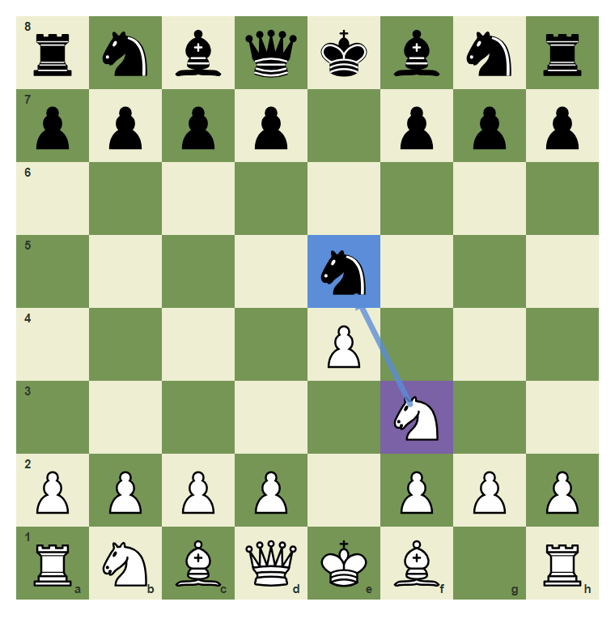
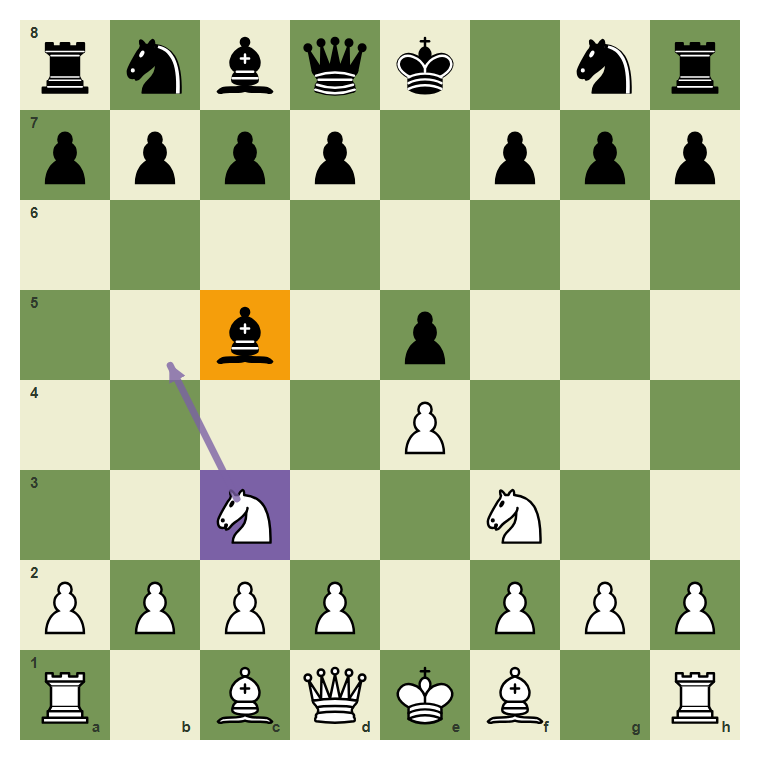
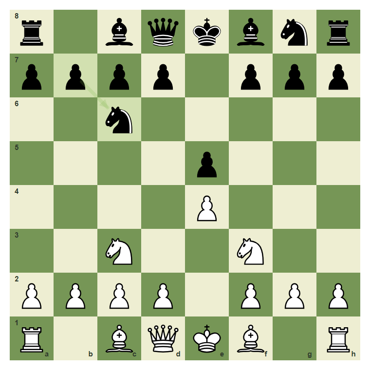
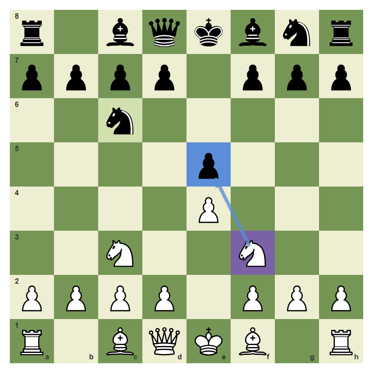
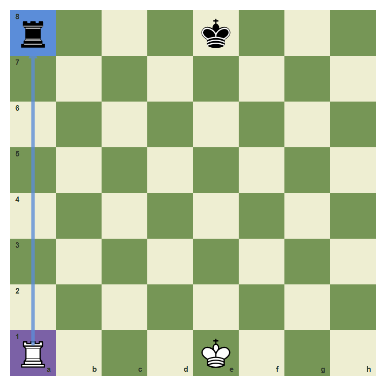

What Is A Hanging Piece?
Stop giving pieces away for free.
- Define a hanging piece.
- Count whether a target is defended.
- Capture loose material without rushing.
Loose Pieces Fall
A hanging piece is attacked and not safely defended. At beginner level, many games are decided by one loose knight, bishop, rook, or queen.
The knight on e5 is loose

White can capture e5 because the knight is sitting in the open.
The bishop on c5 needs checking

Do not call a piece loose until you count attackers and defenders.
Defended is different from hanging

The knight on c6 has defenders. A target is not automatically free.
Count before collecting

The e5 pawn is a clearer target than the defended c6 knight.
Open lines create loose rooks

The rook on a8 is exposed on the same file as White rook on a1.
Capture the hanging knight
The black knight on e5 is loose. Play f3 to e5.

Common mistake: every attacked piece is not free
If a piece is defended, a capture may only trade instead of win. Count before you grab.

The c6 knight is marked safe because b7 helps defend it.
Chapter Checkpoint
A hanging piece is:
A hanging piece is:
Before capturing a target, you should count:
Before capturing a target, you should count:
A defended piece is always free material.
A defended piece is always free material.